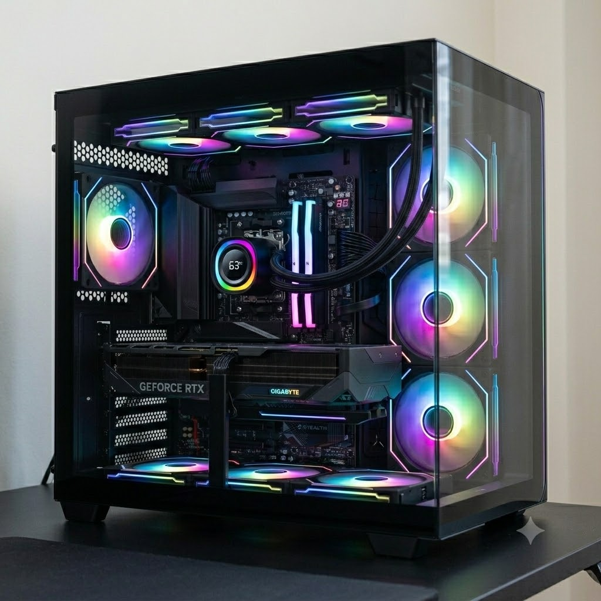
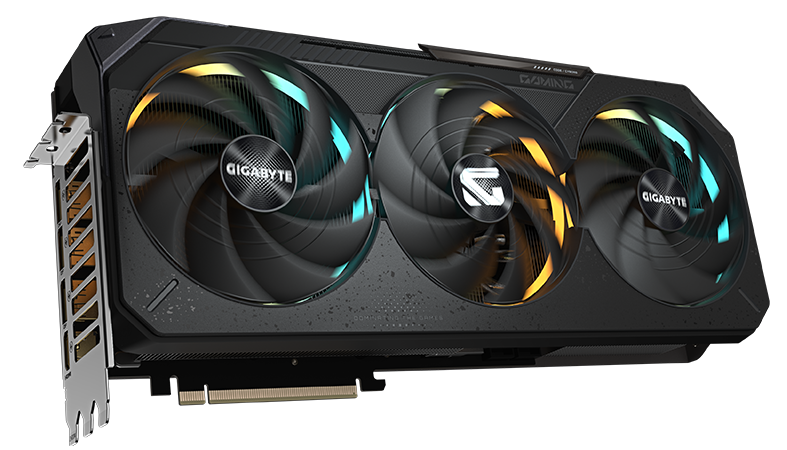
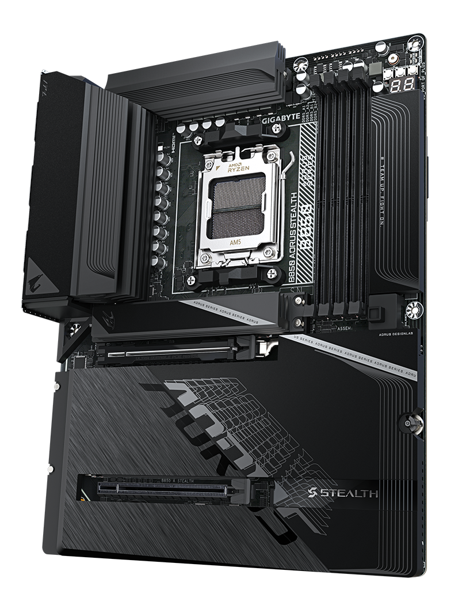
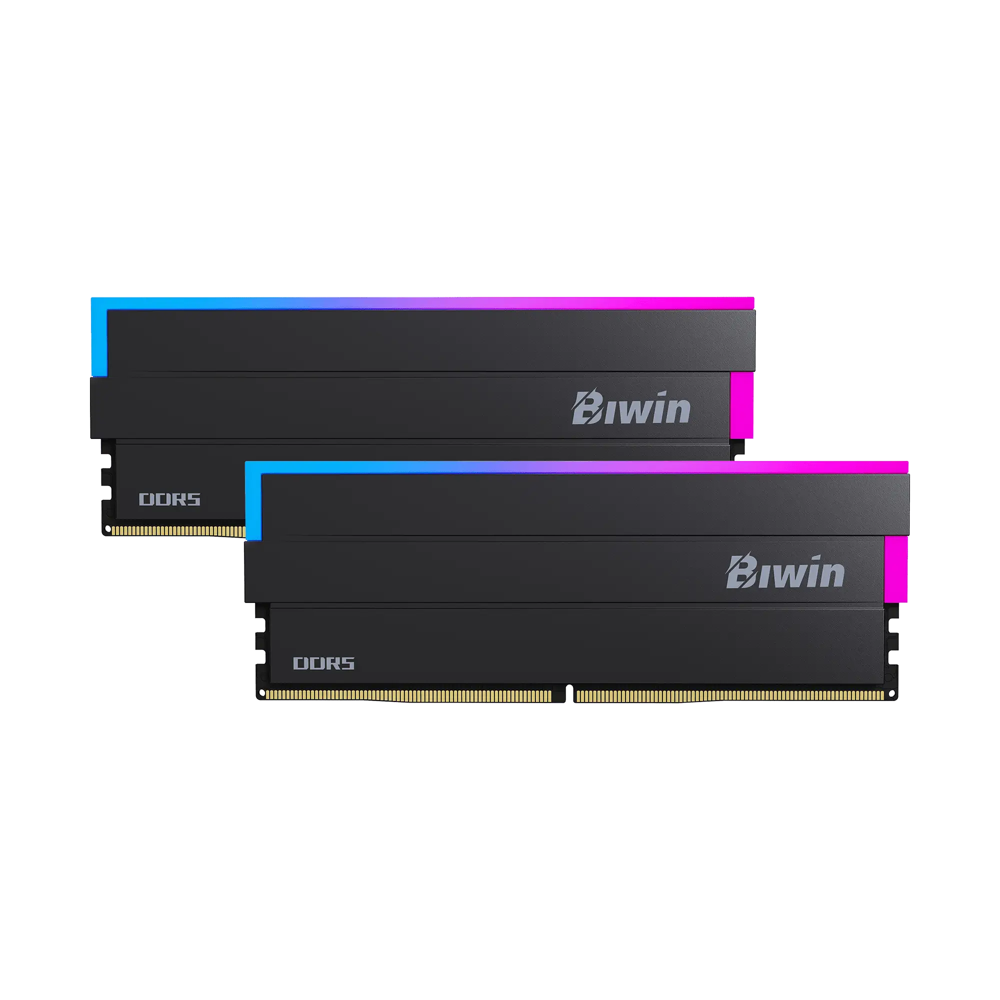
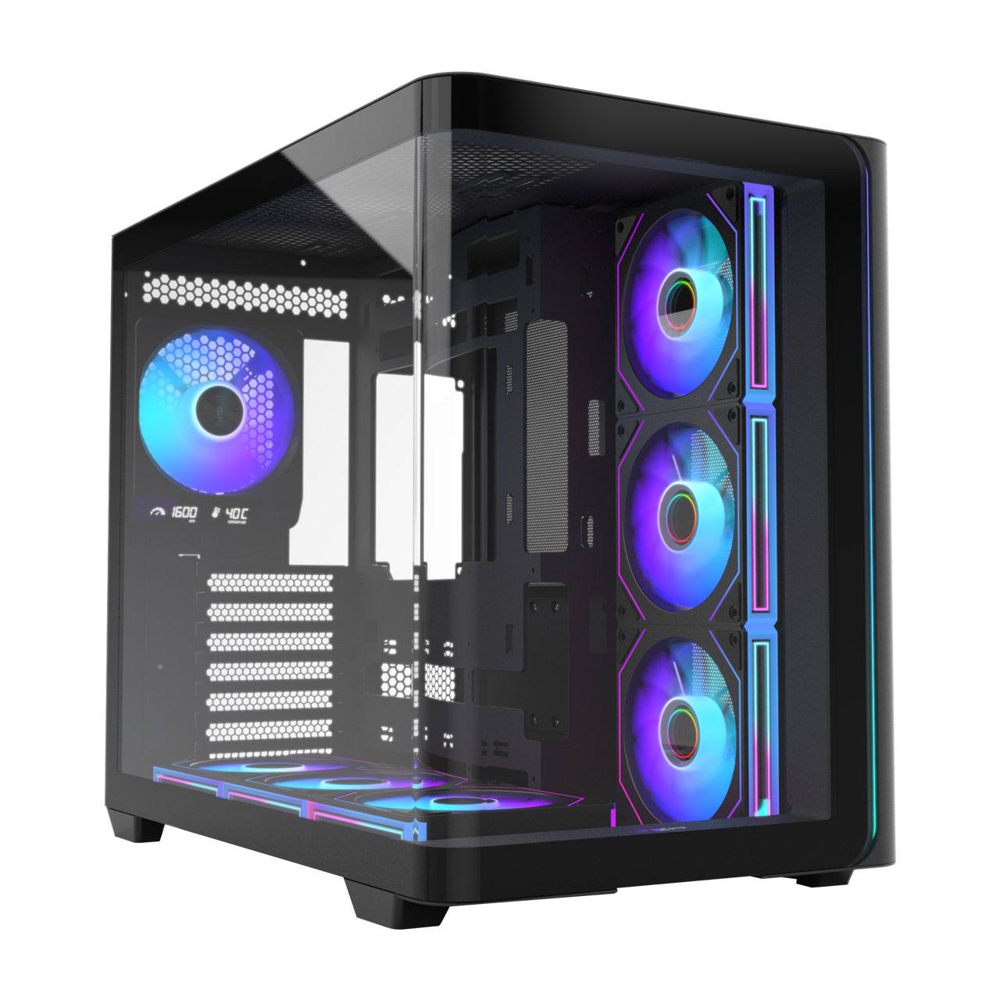

✕
2026 旗艦升級
i5-12400 + RTX 4060 Ti → Ryzen 7 7700 + RTX 5070 Ti。
為遊戲、AI 生圖與重度多工而生。

一次到位的全平台改變。
顯示卡
Blackwell 架構、8960 CUDA、GDDR7。徹底告別 8GB 的 VRAM 焦慮。

主機板
背插式設計，所有接線藏到背面。14+2+2 相供電，5GbE + Wi-Fi 7。

記憶體
Biwin Black Opal DW100。容量、頻寬與時序的完美平衡，AI 與多工不再吃緊。

機殼
全漢 M580 PRO-BA。曲面無柱玻璃、背插分艙，把這套漂亮的零件完整展示出來。

點一下放大細看。這四個是裝機後最搶眼的零件。
把滑桿往左拉看舊配置，往右拉看升級後。
同樣的工作，更快、更穩、更安靜。
跑分 · 散熱 · 噪音
合成跑分的提升，加上 360 水冷與三風扇顯卡帶來的低溫與安靜。
AI 算力
第 5 代 Tensor Core，原生硬體加速 FP8 / FP4 量化。生圖、補幀、去馬賽克全面受惠。
影音 AI
16GB GDDR7 + 第 5 代 Tensor Core，逐幀影音工作流不再卡 VRAM。
偵測 + 深度還原（VSR / GAN）。1080p 約需 4–8GB VRAM，16GB 可吃 4K 來源、偵測+還原不爆顯存，較 4060 Ti 約快 1.5–2×。
光流內插，1080p 約需 2–4GB。24 → 60 / 120fps 近即時，4K 補幀也跑得動。
動畫最佳，1080p 約需 6–10GB。16GB 不再 OOM，輸出速度較 4060 Ti 約快 1.7–2×。
※ 倍率為依硬體規格之估算，實際依模型版本、來源解析度與設定而定。LADA 等去馬賽克工具請僅用於你擁有或合法授權、且為個人用途的內容。
耗電量
更高效能自然帶來更高功耗——但每一瓦都換到更多工作完成。切換負載看整機功耗。
電源由 650W 升至 850W 金牌全模組，整機滿載約 60% 負載（效率最佳區間），並為新世代顯卡瞬時功耗預留餘裕。數值為整機估算。
日常模擬
勾選你會「同時」開的工作，看看舊機與新機各自撐不撐得住。
含系統基底約 5GB RAM / 1GB VRAM。占用為估算；VRAM 超出 8GB 時舊卡會啟用共享系統記憶體，速度大幅下降。
三大品牌梯隊比較。切換看主機板與顯示卡。
| 等級 | 技嘉 | 微星 | 華碩 |
|---|---|---|---|
| 入門 | B850M DS3H | PRO B850M-A | PRIME B850M-A |
| 中高階 ★本單 | B850 AORUS STEALTH | MAG TOMAHAWK | TUF B850-PLUS |
| 旗艦 | X870E AORUS MASTER | MEG X870E ACE | ROG STRIX X870E-E |
| 梯隊 | 技嘉 | 微星 | 華碩 |
|---|---|---|---|
| 入門 | Eagle / Windforce | Ventus 3X | Dual / Prime |
| 主力 ★本單 | GAMING OC（魔鷹） | GAMING TRIO（魔龍） | TUF Gaming |
| 旗艦 | AORUS Master（超級雕） | SUPRIM X（超龍） | ROG Strix |
處理器升級路徑
含現役 i5-12400，比較遊戲、多核與「開啟網頁」響應。AM5 沿用同一張 B850 就能直上 X3D / Zen5。點選切換——預設為本單的 7700。
效能為相對估算：3D V-Cache（X3D）對遊戲幫助大、對多核較無感；Zen5（9000）多核與能效更好。開啟網頁速度主要看單核響應，各 CPU 差距不大——連現役 12400 都很流暢，瓶頸通常在網速而非 CPU。價格為市場參考，升級皆免換平台。
記憶體選擇
兩者同為 DDR5-6000 CL28——頻寬與延遲完全相同。差別只在「容量餘裕」如何影響日常多工。
*遊戲 FPS 幾乎無差，除非大量 Mod 的城市模擬把 32GB 吃爆。結論：純遊戲 32GB 就夠；你的「生圖 + 多機器人 + 多工掛機」用法，48GB 明顯更從容、更耐未來。
同一份升級，三個 AI 各寫一份。點進看完整報告。